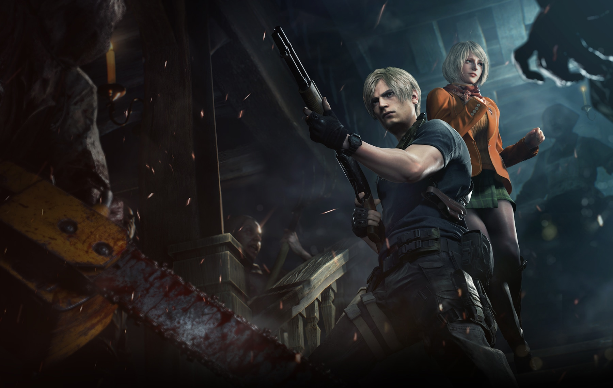
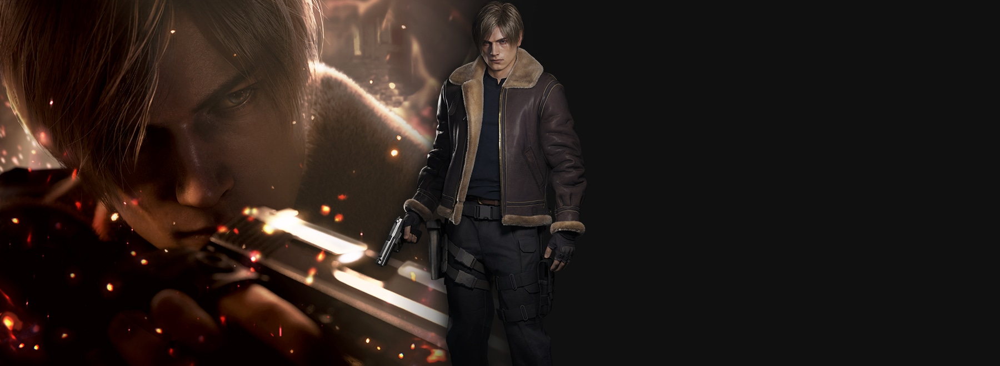


 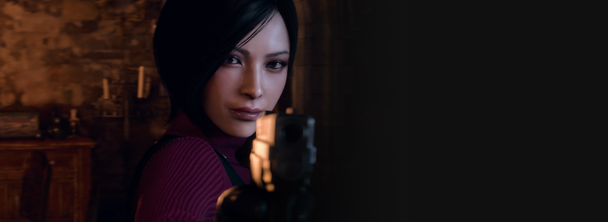
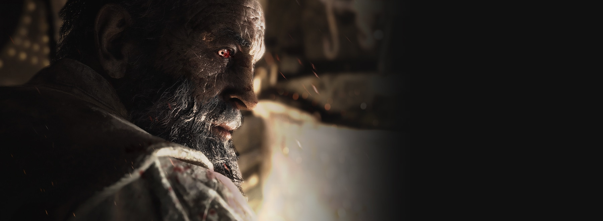
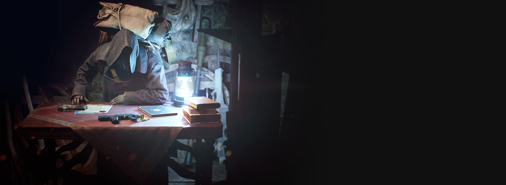
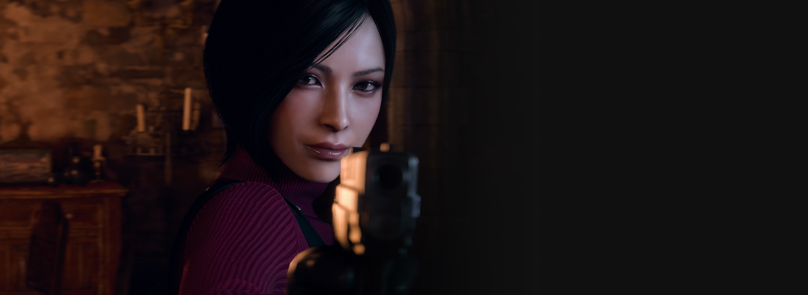
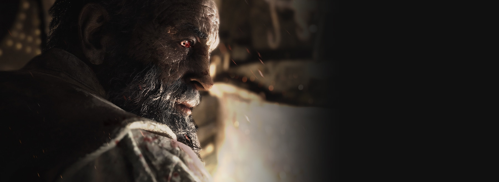
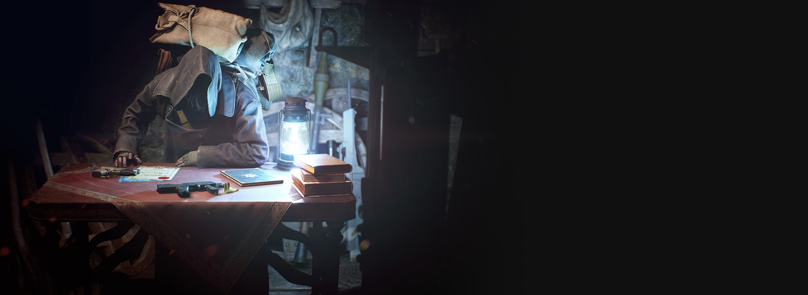
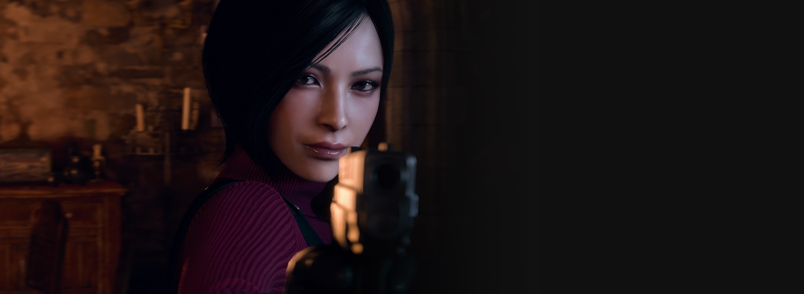
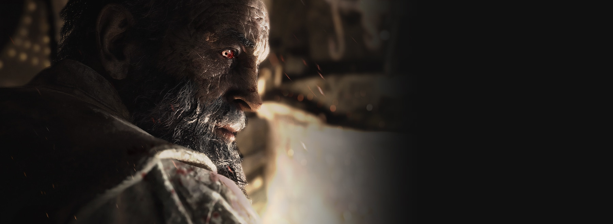
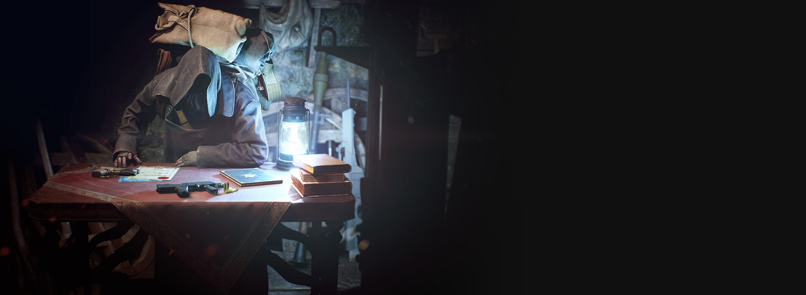
Resident Evil 4 é um remake do Resident Evil 4 original de 2005. Reimaginado para 2023 para trazer horror de sobrevivência de última geração. Resident Evil 4 preserva a essência do jogo original enquanto apresenta jogabilidade modernizada, enredo reimaginado e gráficos vívidamente detalhados para fazer deste o mais recente jogo de horror de sobrevivência, onde a vida e a morte, o terror e a catarse se cruzam.